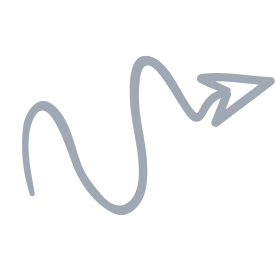
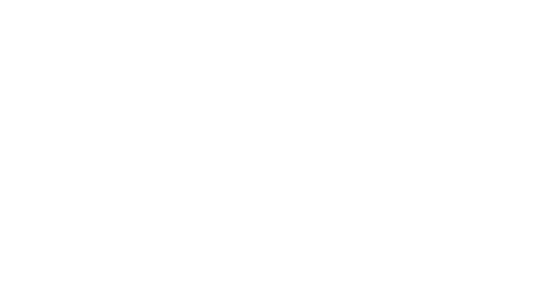
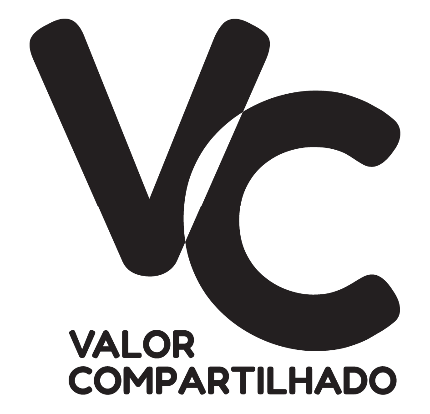

- 1
- 2
- 3
- 4


.png)


Somos uma organização da sociedade civil (OSC) criada em 2006 com o propósito de conectar pessoas e transformar realidades. Fomentamos elos e parcerias entre governos, empresas e organizações da sociedade civil para o enfrentamento de problemas críticos e para a realização de projetos que promovam a garantia de direitos e o desenvolvimento sustentável.


Confira as áreas de atuação deste projeto:
Diálogos IntersetoriaisFortalecimento de Organizações da Sociedade CivilFortalecimento de Conselhos de DireitosEste projeto é financiado por:
Investimento Social PrivadoConfira as áreas de atuação deste projeto:
Fortalecimento de Conselhos de DireitosDiálogos IntersetoriaisFortalecimento de Organizações da Sociedade CivilEste projeto é financiado por:
Investimento Social PrivadoConfira as áreas de atuação deste projeto:
Diálogos IntersetoriaisEste projeto é financiado por:
Parceria MPMGConfira as áreas de atuação deste projeto:
Mobilização e incidência para garantia de direitosEste projeto é financiado por:
Destinação Fiscal Fundo da Pessoa IdosaOuça o nosso podcast, disponível gratuitamente para você nas principais agregadores de áudio:
VER TODOS OS PODCASTSVocê encontra esta notícia também em:
Pelo Direito de Envelhecer com DireitosTrabalho no Terceiro Setor

Conheça a revista digital do CeMAIS, com conteúdos exclusivos sobre boas práticas para o Terceiro Setor e as alianças intersetoriais.
VER TODAS AS EDIÇÕESO Informe 60+ foi produzido especialmente para gestores de instituições de Longa Permanência para Idosos de BH e MG. O objetivo é compartilhar orientações e determinações oficias e criar uma reda de atenção aos direitos da população 60+.
VER TODOSO boletim Rede Criança e Adolescente traz uma seleção de notícias relevantes para as pessoas que trabalham em organizações sociais de atendimento às crianças e aos adolescentes.
VER TODOSNossos conteúdos em vídeo estão disponíveis em nosso canal de YouTube que agrega webinários, videoconferências, eventos virtuais e conteúdos produzidos para contribuir com a sua formação.
ACESSAR CANAL DO CEMAIS VER TODOS OS VÍDEOSVocê encontra este vídeo também em:
Pelo Direito de Envelhecer com Direitos Trabalho no Terceiro Setor